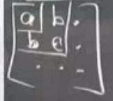
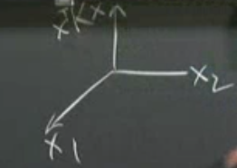
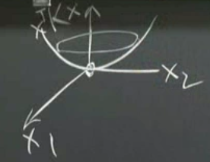
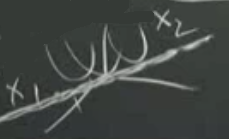
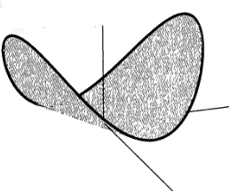
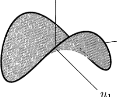

Ders 1.7
Bugün pozitif kesinlik (positive definite) günü. Şimdiye kadar lineer cebirin temellerini işledik, bundan sonra uygulamalara daha ağırlık vereceğiz, tabii ki matrisler yapacağımız her şeyin temelinde olmaya devam edecekler. Konuya şu açılardan yaklaşacağız:
1) Testler 2) Anlam 3) Uygulamalar
İlk önce testler. Pozitif kesinlik kelimesi söyleyince matrisin simetrik olduğunu anlamak gerekiyor, yani matrisin reel özdeğerleri var, ve pek çok diğer özelliği de var muhakkak, mesela özvektörlerinin birbirine dik olması gibi. Bu derste daha fazla özellik göreceğiz, ve bu ekstralar özellikler uygulamalarda hakikaten müthiş faydalar sağlıyorlar.
Daha önce söylediğimiz gibi pozitif kesinlik lineer cebirin tamamını bir araya getirir. Testleri şunlardır:
1) Tüm pivotlar $>$ 0
2) Tüm üst sol determinantlar (upper left determinants) $>$ 0
3) Tüm özdeğerler $>$ 0
"Üst sol" ile neyi kastediyorum? 3x3 bir matriste (alttaki resim) kareye alınılmış bölümlerden. Bunlardan birincisi sadece $a$ değerini veriyor. İkinci üst sol determinant $ac - b^2$ (iki tane $b$ var çünkü matris simetrik, unutmayalım) değerini veriyor, vs. Bu iki değerin de sıfırdan büyük olması gerekiyor. Tabii ki ana determinantın da $>$ 0 olması gerekiyor. Doğal olarak $ac > b^2$, çaprazdaki çarpım, çapraz dışındaki değerlerin çarpımını "pozitiflikte geçmeli", başka türlü çıkarma işlemi pozitif sonuç vermezdi.

Anlama gelelim. Pozitif kesinlik kavramı, bir eğrinin [eliyle dışbükey bir parabol hareketi yapıyor, onun alt noktasını kastederek] minimumunu bulmak ile yakından alakalı, ya da "enerjiyi azaltma" problemleriyle alakalı. Bu fiziksel anlamı bu özelliğin uygulamalarda niye bu kadar faydalı olmasının da bir sebebi aslında. $x$'in bir fonksiyonunu hayal edelim:
$$ f(x) = x^TKx $$
ve diyelim ki $K$
$$ \left[\begin{array}{rr} a & b \\ b & c \end{array}\right] $$
bu derste $x$'in kendisi ile çarpımını ilk kez kullanıyoruz bu arada. Bu form doğal olarak karesel bir sonuç ortaya çıkartacak. Biraraya koyarsak
$$ f(x) = \left[\begin{array}{rr} x_1 & x_2 \end{array}\right] \left[\begin{array}{rr} a & b \\ b & c \end{array}\right] \left[\begin{array}{r} x_1 \\ x_2 \end{array}\right] $$
Sonuç hangi boyutlarda çıkar?
$$ f(x) = \underbrace{x}_{1xn}^T\underbrace{K}_{nxn}\underbrace{x}_{nx1} $$
Zinciri takip edersek, 1x1 boyutlarında. Temel lineer cebirden hatırlarsak, $N \times M$ ve $M \times K$ çarpımı $N \times K$ boyutlarında bir matris çıkartır. Elde edeceğimiz $1 \times 1$ ise, bu tek bir sayıdır. Tek sayının bileşenleri nedir? Çarpımı cebirsel olarak takip edersek
$$ = ax_1^2 + 2bx_1x_2 + cx_2^2 $$
İşte "enerji" formülü bu, bu forma niye enerji dediğimiz ileriki derslerde uygulamalara girince daha da iyi belli olacak. Formun çok önemli bir anlamı var.
Bu noktada üstte belirttiğim testlere bir 4. kalem ekleyebilirim, hatta önemini belirtmek için başına yıldız bile koymak düşünülebilir!
4) $x=0$ haricindeki tüm $x$'ler için $x^TKx > 0$.
Bu son formülü açıklamak için bir grafik çizelim.

Değişen her $x_1$ ve $x_2$'ya göre hesaplanan, çizilen $x^TKx$'in grafiği yani. Bu grafik neye benzerdi acaba? Sıfırdan başlarsam hep yukarı gider değil mi? Bir kapa benzerdi, ve resmi aşağı yukarı şöyle olurdu.

$K$ yerine diğer bazı pozitif kesin matrisleri düşünelim. Mesela birim matris hangi $f(x)$'e sebep olur? $x_1^2 + x_2^2$, ki bu formülde mükemmel bir kap şeklini ortaya çıkartır. Ya şu matris olsaydı?
$$ \left[\begin{array}{rr} 1 & 2 \\ 2 & 9 \end{array}\right] $$
Sonuç $x_1^2 + 4x_1x_2 + 9x_2^2$ olurdu, o zaman şekil üst kesitinde daha eliptik bir şekilde olurdu. Üstteki matriste 2 değerinden yukarı çıkabiliriz, ama pozitif kesinlik istiyorsak bu $9 \cdot 1$'i geçmeyecek kadar olmalı.
İlginç bir durum pozitif kesinliğin tam sınırındaki durumdur. Matematikte bu tür sınır şartları anlamak bütünü kavramakta faydalı oluyor. Mesela üstteki örnekte 2 yerine 3 olsaydı o zaman
$$ \left[\begin{array}{rr} 1 & 3 \\ 3 & 9 \end{array}\right] $$
Bu matrise bakalım, ikinci kolon birincisinin "katı" olduğu için hemen bu matrisin eşsiz olduğunu anlıyoruz. O zaman özdeğerlerinden biri kesinlikle 0 olmalı. Matrisin izi özdeğer toplamını verdiğine göre ikinci özdeğer 10. Formülü neye benzer? $x_1^2 + 6x_1x_2 + 9x_2^2$. Bu tür matrislere pozitif yarı-kesin (semi-definite) deniyor. Özdeğerleri $\ge 0$, determinantları $\ge 0$, ve sebep oldukları $f(x) \ge 0$, yani enerjileri $\ge 0$.
Mantık yürütmeye devam edelim. Pozitif yarı kesinlik eşsiz bir matrisin olduğu anlamına geliyorsa, o zaman bazı $x$ değerleri için $f(x)$ sıfır olacak demektir. Üstteki örnekte bu hangi değer? [3 -1]'i deneyelim, ve çarpımı yapalım
$$ \left[\begin{array}{rr} 1 & 3 \\ 3 & 9 \end{array}\right] \left[\begin{array}{r} 3 \\ -1 \end{array}\right] = \left[\begin{array}{r} 0 \\ 0 \end{array}\right] $$
Hakikaten de $x_1 = 3$ ve $x_2=-1$ kullanınca $x_1^2 + 6x_1x_2 + 9x_2^2$ formülünün sıfır sonucunu verdiğini görürüz. Şekil aşağı yukarı şöyle:

Hoca bu şekli çizmek için $x_1$ üzerinde 3 birim ileri, $x_2$ üzerinde 1 birim geri gitti, ve o noktadan geçen bir çizgi üzerinde değişim, yukarı aşağı gidiş yok. Bu çizgi tabii ki 3 ve -1'ın katları alınarak elde edilebilecek noktalardan oluşuyor, ve bu noktalar üstteki matrisin "sıfırlık uzayında (nullspace)". Pozitif kesin matrislerden gelen grafikler, kıyasla, böyle değildi. O grafiklerde kap uzerindeki her noktadaki gidiş yönü yukarı işaret ediyordu.
Daha iyi çizilmiş bir şekil şöyle:

Şimdi de pozitif yarı-kesin bile olmayan bir matrisi düşünelim. Bu matriste çapraz dışı (off-diagonal) değerler çok daha büyük ve "kazanıyorlar". Örnek
$$ \left[\begin{array}{rr} x_1 & x_2 \end{array}\right] \left[\begin{array}{rr} 1 & 5 \\ 5 & 9 \end{array}\right] \left[\begin{array}{r} x_1 \\ x_2 \end{array}\right] = x_1^2 + 10x_1x_2 + 9x_2^2 $$
Bu formülü belli bazı $x$ değerleriyle negatif yapmak mümkün. Hangi değerler mesela? Diyelim ki $x_1 = -1$ ve $x_2 = 1/2$. Bu formül bazı noktalarda aşağı, bazılarında yukarı gidebiliyor. Bu durumu ortaya çıkartan matrislere "tanımsız (indefinite)" ismi veriliyor. Grafiği alttaki gibi, atların üzerine koyulan bir eğer gibi.

Bunlar önemli noktalar. Şimdi biraz ileri atlayalım. Elimizde bazı seçenekler var. Mesela tipik olarak $Ku = f$ durumunda bir formül çözüyorduk ve tek bir çözüm buluyorduk. Bir diğer seçenek te bir fonksiyonu, bir enerjiyi minimize etmek. Uygulamalar için seçenekler bunlar.
Pozitif kesin matrisler alttaki ifadeden gelirler. Bu kavram test olarak ta anlamlı, o yüzden testlere bir 5. kalem ekleyeceğiz.
- $K = A^TA$.
Bu ifade pozitif kesin. Niye? $x^TKx = x^TA^TAx$'ye bakalım.
$$ x^TA^TAx $$
Bu ifade aslında şu değil mi?
$$ = (Ax)^T(Ax) $$
Ve bu ifadenin de $(Ax)^T(Ax) \ge 0$ olduğunu biliyoruz, çünkü $Ax$'in devriği tekrar kendisi ile çarpılıyor. İfadenin sıfıra eşit olması ancak $Ax=0$ ise mümkündür. Mantık zincirine devam edersek, $Ax=0$'yi çözen bir $x$ varsa ($A$'nin sıfır uzayı boş değilse), yani $Ax=0$'e sebep olacak sıfır vektörü haricinde bir $x$ mevcutsa, o zaman $(Ax)^T(Ax)$ pozitif yarı-kesin demektir, çünkü o zaman $Ax=0$ olabilecektir.
$Ax=0$ uygulamalarda nasıl ortaya çıkar? Mesela bir yay sisteminde eğer yer değişimi var ama yay esnemesi yoksa ($Ax$ yay esnemesini ölçer), bu durum ortaya çıkabilir. Peki bu nasıl mümkün olabilir, yay esnemeden, daralmadan nasıl hareket olabilir? Eğer yay sisteminin "tamamı" kaldırılıp başka yere götürülürse. Bu sistem serbest-serbest sistemi ile mümkün, yani iki ucun bir yere bağlı olmadığı bir yay sisteminde, sistem $\left[\begin{array}{ccc}1&1&1\end{array}\right]$ vektörü ile bir yere taşınıyor. Bu durumda matris eşsiz demektir, çünkü pozitif yarı-kesindir. Yani tipik matrislerimizden
$K,T$ pozitif kesin.
$B, C$ pozitif yarı-kesin.
Mantığa devam: Sadece ve sadece $A$ matrisinin bağımsız kolonları var ise, o zaman $Ax$ pozitif kesindir.
Şimdi pozitif-kesin matrislerin tersini (inverse) düşünelim. Tersini alınca ele geçen matris te pozitif kesin midir? Bunu kararlaştırmak için elimizde bir sürü test var. Pivot ve determinantlara girmek biraz işleri karıştırır, ama özdeğerlere ne olur, kendimize bunu soralım. Bu özdeğerlerin ne olacağını hemen biliyoruz, mesela elimizde 3,4,5 gibi özdeğerler olsa (hepsi pozitif tabii ki), matrisin tersini alınca elde edeceğimiz özdeğerler 1/3,1/4,1/5 gibi değerler olacaktır, ki bu değerler de pozitiften. 1'den küçük olabilirler ama 0'dan büyüktürler. En basit kontrol edilebilecek test buydu. Pozitif kesinlik için bütün testlerin doğru olması gerekir.
Peki elimizde iki pozitif kesin matris $K_1$ ve $K_2$ varsa
$$ K_1 + K_2 $$
pozitif kesin midir? Bu toplamın özdeğerlerine bakmak zor olur. Fakat 4. testi kullanabiliriz. $K_1$ ve $K_2$'yi $x$ ile çarpalım.
$$ x^TK_1x + x^TK_2x $$
Formüldeki her terim sıfırdan büyüktür, çünkü bu pozitif kesinliğin tanımı. O zaman toplam da sıfırdan büyük olacaktır. Bu sonuca eriştikten sonra, şimdi cebirsel olarak basitleştiririz:
$$ x^T(K_1 + K_2)x $$
Ve iki pozitif kesin matrisin toplamına erişmiş oluruz. Demek ki iki pozitif kesin matrisin toplamı da pozitif kesindir.
Peki toplam şöyle olsaydı?
$$ \underbrace{K_1}_{A^TA} + \underbrace{K_2}_{B^TB} $$
A ve B'yi tek bir matris içine koyduğumuzu varsayalım, ki bu matrislere "blok matrisleri" deniyor:
$$ C = \left[\begin{array}{r} A \\ B \end{array}\right] $$
Blok matrisinin devriği nedir?
$$ C^T = \left[\begin{array}{rr} A^T & B^T \end{array}\right] $$
Blok matrisleri nasıl çarparım?
$$
C^TC = A^TA + B^TB
$$
Bu $K_1 + K_2$'ya eşittir.
Ekler
Noktasal çarpım bakış açısı çarpım içeren açılımı göstermek için $(Ax)^T Ax$ iyi bir örnek. Mesela bir problemde $||Ax||^2 = Ax \cdot Ax$ verilmiş ise eşitliğin sağ tarafını $(Ax)^T Ax$ olarak görerek açılıma oradan devam edebiliriz [1],
$$ Ax \cdot Ax = (Ax)^T Ax = x^T A^T (Ax) = x^T (A^T A) x $$
Dikkat, $x^T$ ile ifadenin geri kalanı arasında da bir noktasal çarpım var aslında, o zaman
$$ = x \cdot (A^T A) x $$
formülüne de erişilebilir.
Kaynaklar
[1] Math Stack Exchange, Transpose matrix and inner product, https://math.stackexchange.com/questions/2823831/transpose-matrix-and-inner-product
Yukarı